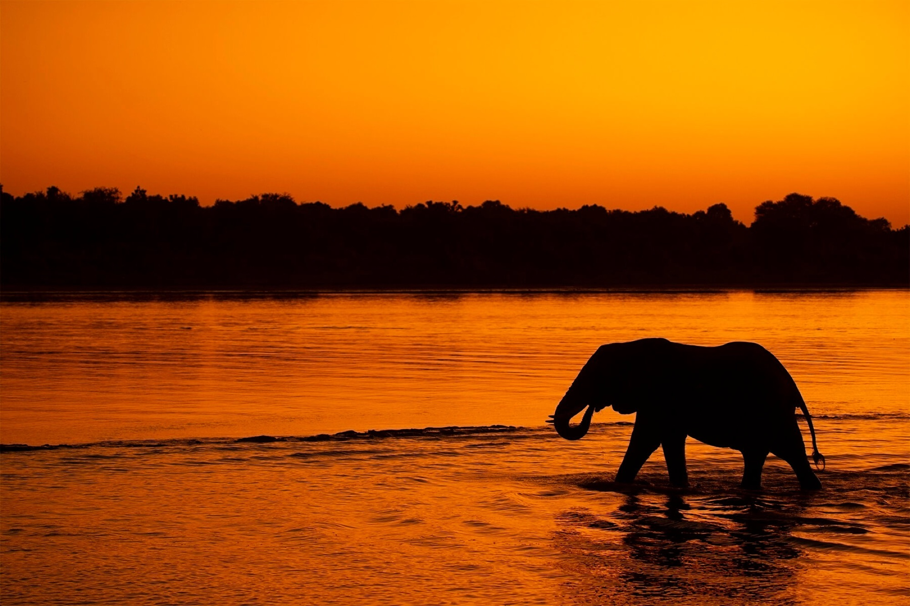

Ga je mee?
Wil je meer weten over een workshop of fotoreis? Of wil je een foto bestellen? Stuur Marco de Paauw een WhatsApp-bericht.
+31 6 265 885 62
Stuur een WhatsApp-bericht

Wil je meer weten over een workshop of fotoreis? Of wil je een foto bestellen? Stuur Marco de Paauw een WhatsApp-bericht.
+31 6 265 885 62
Stuur een WhatsApp-bericht